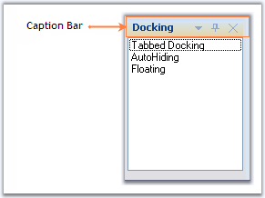

Caption for the docked controls can be enabled using ShowCaption property. By default this property is true.

Figure 55: Illustrates CaptionBar in a Docked Control
The following topics will guide the end users on how to effectively use the caption bar settings for the docked controls.
 Label and Image for CaptionBar
Label and Image for CaptionBar